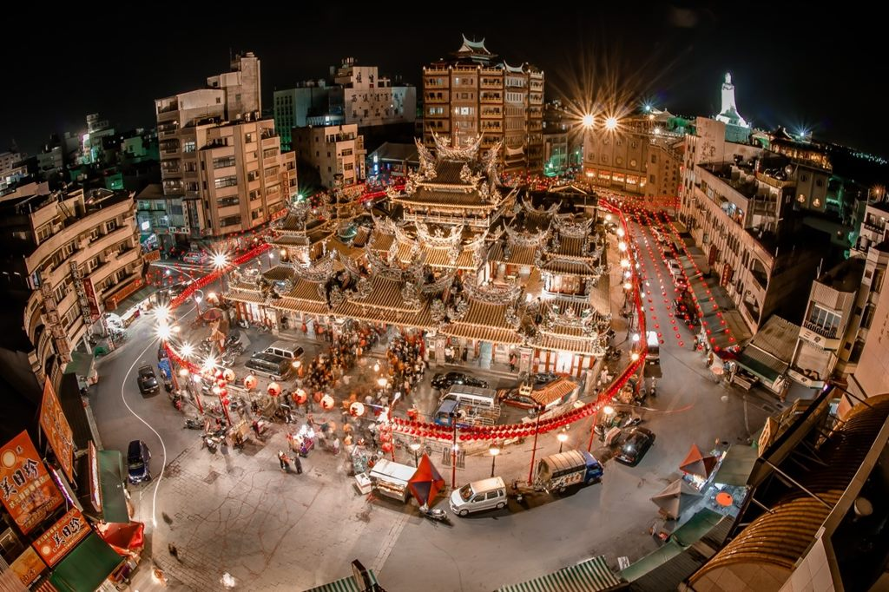

北港朝天宮
北港朝天宮舊稱天妃廟或天后宮，為了紀念分靈自湄洲的祖廟──朝天閣，才改名為朝天宮。創建於清康熙年間，西元1694年，因神蹟靈驗，已成為全國三百餘座媽祖廟的總廟，外觀輝煌。廟中供祀天上聖母及觀世音菩薩等神像。廟內的樑架結構及木雕皆出自於名匠之手，如廟埕外石欄杆柱上四海龍王之石雕像，每尊姿態各異，氣勢雄健，還有以米字形做出斗拱結網構造而成的藻井，整座寺廟不論是小至窗花上的人物表情動作的刻畫，大到氣勢雄偉的盤騰龍柱，作工之精巧細緻，無異是結合了宗教與藝術精品的綜合體。
北港朝天宮終年香火鼎盛，每年最熱鬧的二次遶境分別是農曆正月15日的元宵節及3月23日媽祖誕辰，元宵節是以花燈比賽為主，媽祖誕辰期間，各地信徒及分靈廟宇陸續回北港進香，規模十分盛大，而遶境遊行，更是鑼鼓喧天，萬人空巷，為媽祖香期最高潮。讓整個北港鎮都籠罩在濃郁的宗教氣息中。